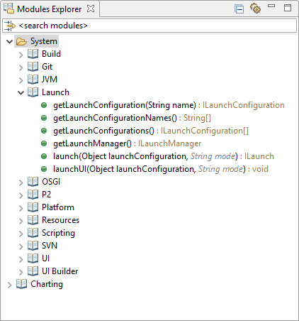

EASE provides modules, script libraries that simplify the use of several Java APIs. To browse available libraries and their functionality, the Modules Explorer view lists available functions.
Modules are organized in categories, displayed in a tree structure. Once loaded it provides the functions and members that are listed. Function parameters are listed, the optional ones in grey, italic text. The return type is denoted after the colon. Modules, functions and members are drag & drop enabled. The shell will automatically load the defining module if required, but cannot automatically set the mandatory parameters. Drop will result in an error, but then the command can easily be re-executed with the correct parameters.
All items do provide hover help to show details on the module or the function. The same information is also available in the help system and can be accessed from the context menu of each item.
The search box at the top allows to search for modules and/or methods that contain a dedicated string. Do not forget to clear the input to see all available methods again.
Module preferences are available in Preferences/Scripting/Modules. Modules may be switched from visbile to hidden state and vice versa via drag & drop. Categories cannot be changed that way, so it does not matter on which folder you drop a module.
Read more about modules to understand how they integrate with the script engine.